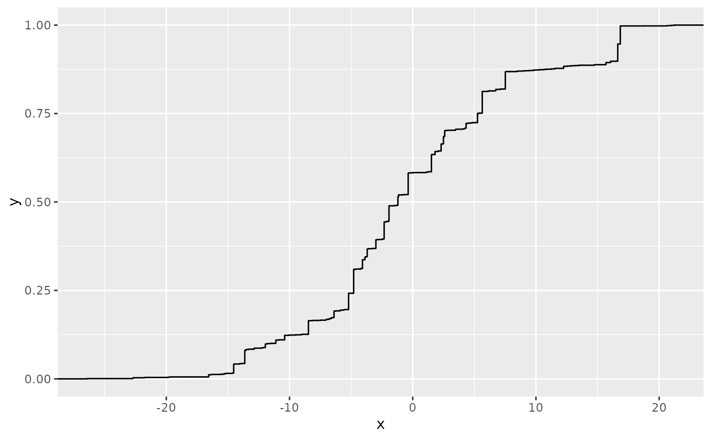
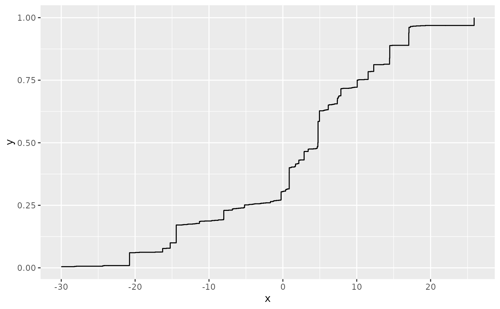
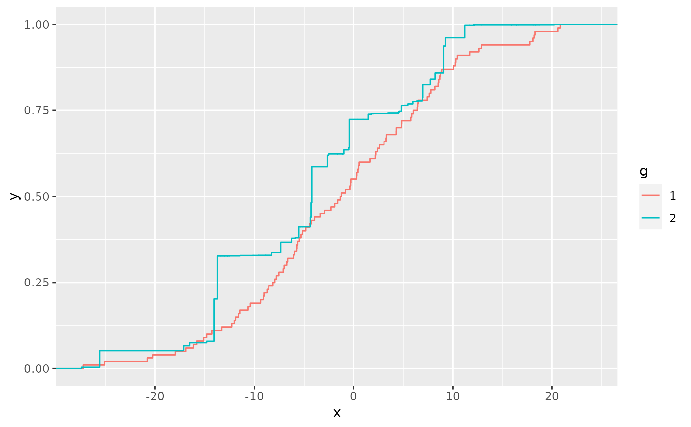
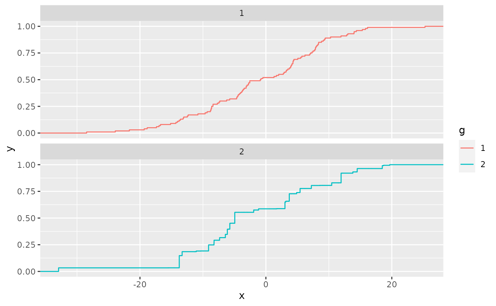

Version of ggplot2::stat_ecdf that adds a weights property for each
observation, to produce an empirical weighted cumulative distribution function.
The empirical cumulative distribution function (ECDF) provides an alternative
visualisation of distribution. Compared to other visualisations that rely on
density (like geom_histogram()), the ECDF doesn't require any
tuning parameters and handles both continuous and discrete variables.
The downside is that it requires more training to accurately interpret,
and the underlying visual tasks are somewhat more challenging.
stat_ewcdf( mapping = NULL, data = NULL, geom = "step", position = "identity", ..., n = NULL, pad = TRUE, na.rm = FALSE, show.legend = NA, inherit.aes = TRUE )
| n | if NULL, do not interpolate. If not NULL, this is the number of points to interpolate with. |
|---|---|
| pad | If |
| na.rm | If |
x in data
cumulative density corresponding x
wquantile
library(ggplot2) n <- 100 df <- data.frame( x = c(rnorm(n, 0, 10), rnorm(n, 0, 10)), g = gl(2, n), w = c(rep(1/n, n), sort(runif(n))^sqrt(n)) ) ggplot(df, aes(x, weights = w)) + stat_ewcdf(geom = "step")# Don't go to positive/negative infinity ggplot(df, aes(x, weights = w)) + stat_ewcdf(geom = "step", pad = FALSE)